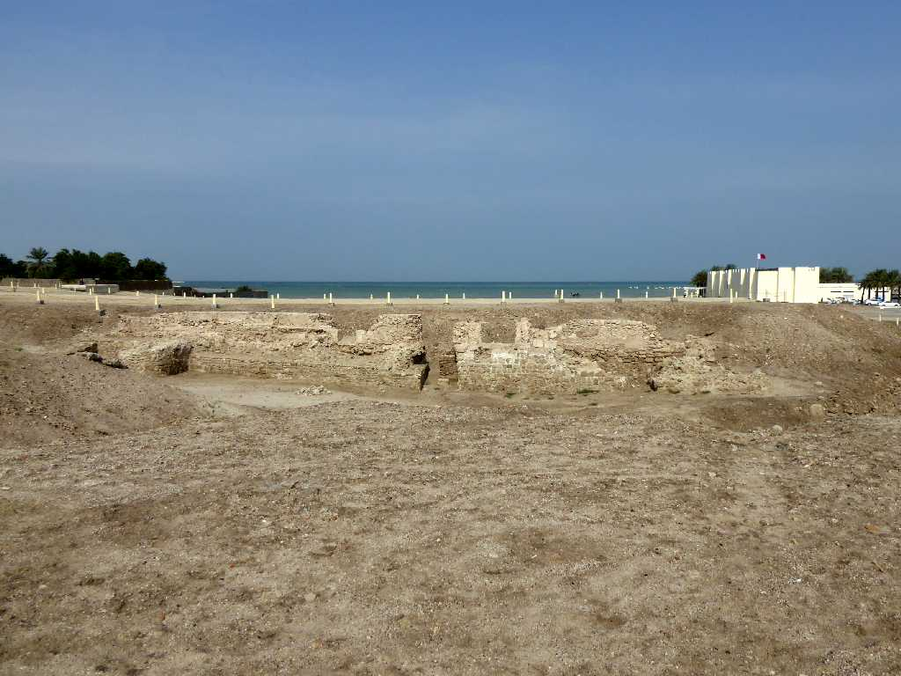
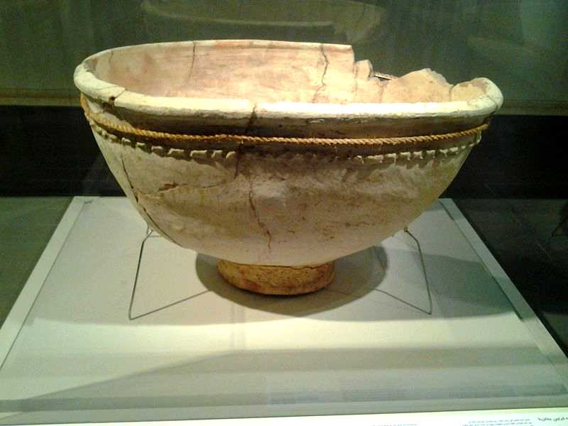
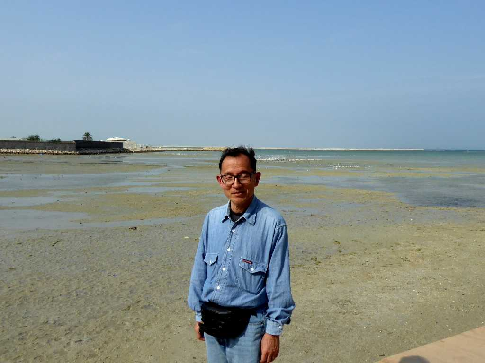
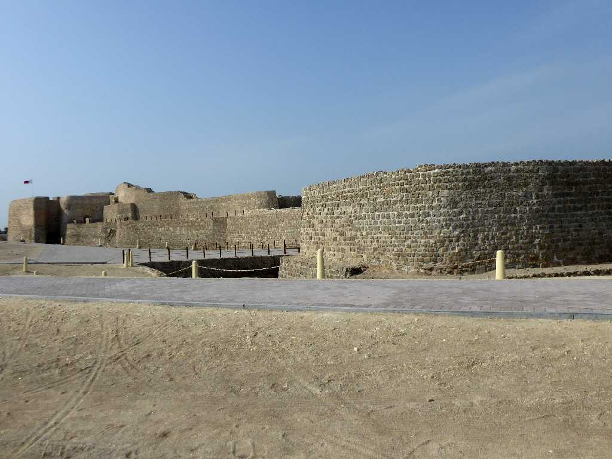
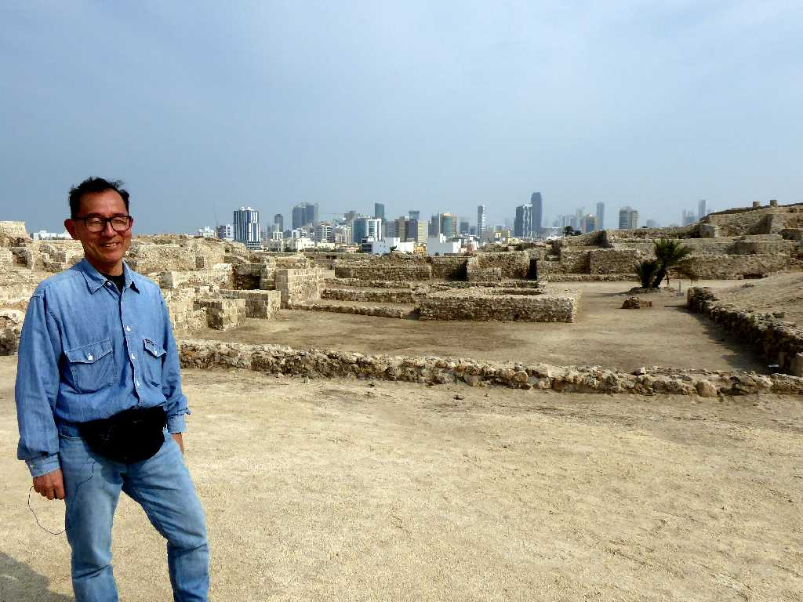

Qal’at al-Bahrain (Ancient Harbour and Capital of Dilmun) Bahrain Fort Manama
紀元前３,２００年頃にアラビア半島に現れた古代ディルムン文明が紀元前２,３００年頃にメソポタミア文明とインダス文明を結ぶ古代ディルムンの交易の街として栄えた首都と港跡

Clay casket Dilmun culture Bahrain National Museum Manama
バーレーン博物館にあるディルムン文明の粘土棺桶

December 8 2019 Qal’at al-Bahrain Bahrain Fort Manama
古代ディルムンの港跡からは淡水の湧き水が今も噴き出している

Bahrain Fort Manama
１６世紀に古代都市の上にポルトガル人により築かれたバーレーン要塞

December 8 2019 Bahrain Fort Manama
バーレーン要塞から現在のバーレーンの首都マナーマ市街を望む